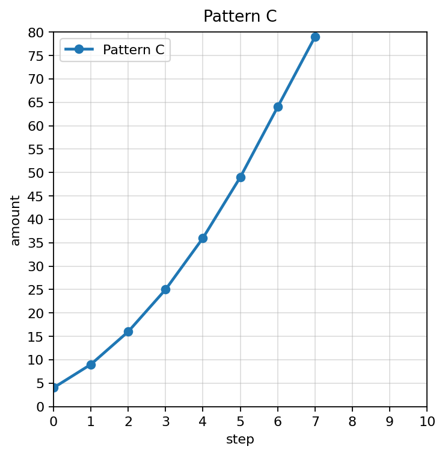

Practice Set 8.1.2
Algebra 1 Practice Package
Spiral Plan and DoK Balance
Current Focus
Unit 8.1: Selecting Appropriate Models
4 current questions: DoK 1, DoK 1, DoK 2, DoK 3
Unit 8.1: Selecting Appropriate Models
4 current questions: DoK 1, DoK 1, DoK 2, DoK 3
Main Spiral
Unit 7.1: Recognizing Growth and Decay
4 DoK 1, 2 DoK 2, 1 DoK 3, 1 DoK 4
Unit 7.1: Recognizing Growth and Decay
4 DoK 1, 2 DoK 2, 1 DoK 3, 1 DoK 4
Earlier Readiness
Unit 6.1: Solving Quadratics by Factoring
4 questions: DoK 1, DoK 1, DoK 2, DoK 3
Unit 6.1: Solving Quadratics by Factoring
4 questions: DoK 1, DoK 1, DoK 2, DoK 3
Practice Set 2: This is a section-aligned spiral: 8.1 with 7.1 and 6.1. It is not a previous-section spiral.
1.
A relationship has equal first differences in a table. Which model family is usually most reasonable?
2.
Use Data Set Alpha. Choose the more reasonable model and explain one piece of evidence that rules out the other model.
3.
Sort these contexts by likely model family. Do not use the order of the cards as evidence; write one clue for each sort.
Card C: A savings account grows by 5 percent each year.
Card A: A taxi charges a pickup fee plus a constant rate per mile.
Card D: A ball is thrown upward and then falls.
Card B: A machine part is acceptable based on distance from a target size.
4.
Use the residual plot. Would a model with random-looking residuals or a model with this curved residual pattern be more trustworthy? Explain what the pattern suggests.
5.
Choose the function family for a table whose outputs are multiplied by $0.75$ each step.
6.
Identify the common multiplier in $7, 21, 63, 189$.
7.
Classify Pattern C as exponential or not exponential. Use a multiplier test rather than shape alone.

8.
A population starts at 200 and is cut in half each hour. Is this growth or decay?
9.
Complete the decay table if each amount is multiplied by $0.5$.
| hour | 0 | 1 | 2 | 3 | 4 |
|---|---|---|---|---|---|
| amount | 160 | 80 |
10.
A rumor reaches $12$ people at first and then triples each hour. Make a table for hours $0$ through $4$.
11.
Explain why repeated addition and repeated multiplication can both produce increasing outputs but represent different function families.
12.
Design a table that might fool someone into thinking a relationship is linear at first. Then explain how more data would reveal exponential behavior.
13.
Complete the statement: A zero of a quadratic function appears on a graph as an ________.
14.
For $x(x-8)=0$, list the factors.
15.
Solve by factoring: $x^2-7x+10=0$.
16.
A student solves $(x-4)(x+2)=12$ by saying $x=4$ or $x=-2$. Explain the error and correct the first step.